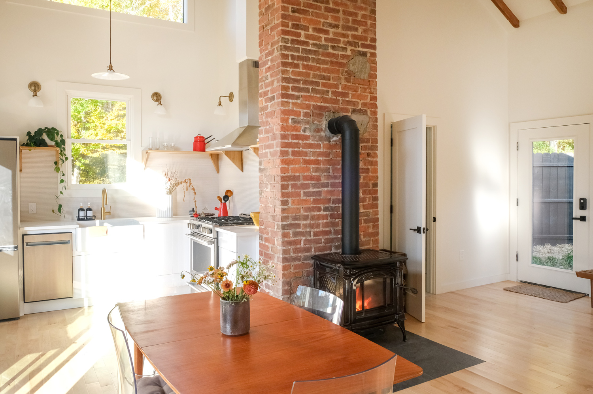
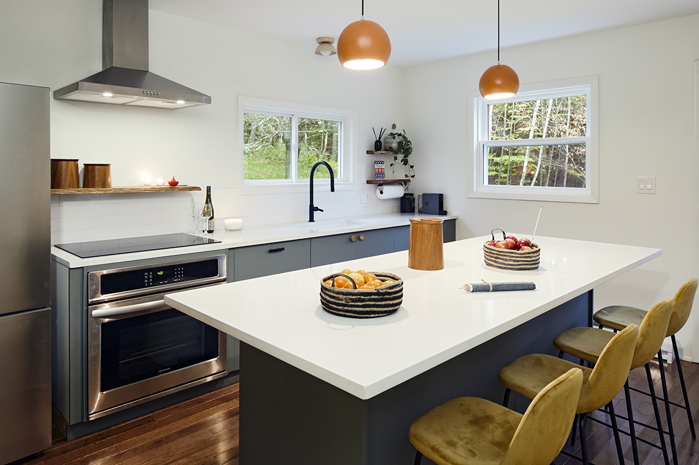
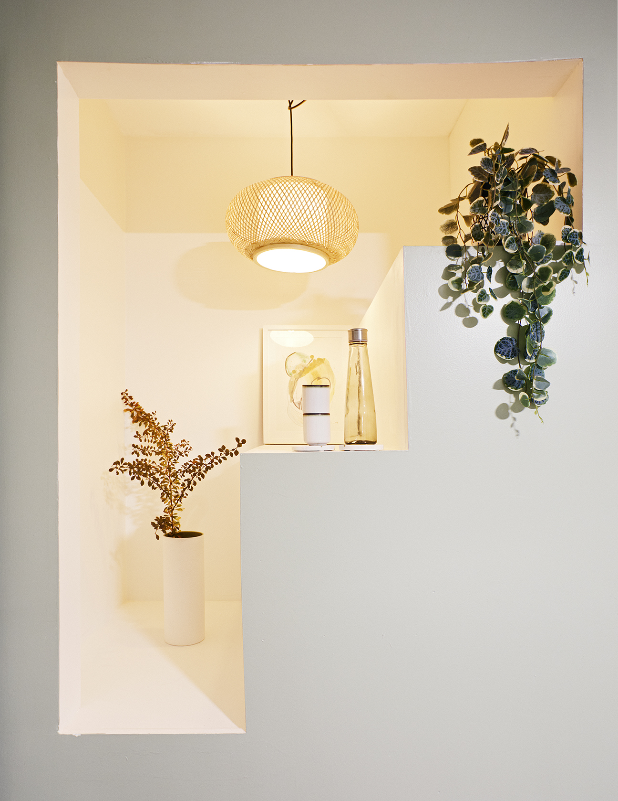

<html>
	<head>
		<title>Homes With Orly</title>
		<script src="https://ajax.googleapis.com/ajax/libs/jquery/3.7.0/jquery.min.js"></script>
		<link rel="stylesheet" href="styles.css">
	</head>
	<body>
		<div id="navigation"></div>
		<script>
			$(function(){ $("#navigation").load("navigation.html"); });
		</script>

	</body>
</html>

<table style="width: 100%;">
<tr>
<td style="width: 50%;">	
<p class="services" style="margin-bottom: 30px">VACANT STAGING</p>

<p class="services">Why is vacant staging so important? Only 10% of home buyers can actually visualize the potential of a vacant home. Without any furniture, there is no frame of reference and it's incredibly difficult to tell the scale and size of a room. When a buyer does not have answers to their questions, they often walk away.<br><br>Using the transformative art of home staging and design we will elevate the home and ensure market readiness. We utilize classic and on-trend furnishings, custom art and quality accents that recall a unique sense of place.<br><br>Our tailored solutions allow potential buyers to emotionally connect to the home, increasing the chance of them visualizing how this home could be the one.</p>
</td>
<td style="width: 50%;">

</td>
</tr>


<tr>
<td style="width: 50%;">

</td>
<td style="width: 50%;">	
<p class="services" style="margin-bottom: 30px">OCCUPIED STAGING</p>

<p class="services">We love helping sellers get their home market ready and dressed for success! Our certified home stagers will create a strategy to prepare the home for listing.<br><br>This service starts with the pre-sale consultation where we will evaluate what needs to be in the home and what needs to be removed to maximize space. We customize this service to meet your needs and budget; we can stick with what you have, we can provide supplementary furnishings to enhance the home, or we can bring in accessories only to complete the vision.<br><br>Our goal is to create a look that will better appeal to potential home buyers in the area, at a price point you are comfortable with.</p>
</td>
</tr>
<tr>
<td style="width: 50%;">	
<p class="services" style="margin-bottom: 30px">CONSULTATION</p>

<p class="services">This service is recommended before any other staging services are determined.<br><br>For occupied homes we'll spend up to two hours waking through the home making a detailed plan room by room that can also be executed by the seller. During this consultation, we will help prioritize the most important, highest return tasks which should be addressed based upon the budget and timeline.<br><br>For vacant homes we'll take pictures, measurements and detailed notes on what is needed to transform the home so it's ready to be photographed.<br><br>This one-on-one consultation is offered at a flat fee of $200 and includes a written report summarizing all of the discussed items.</p>
</td>
<td style="width: 50%;">


</td>
</tr>
</table>
